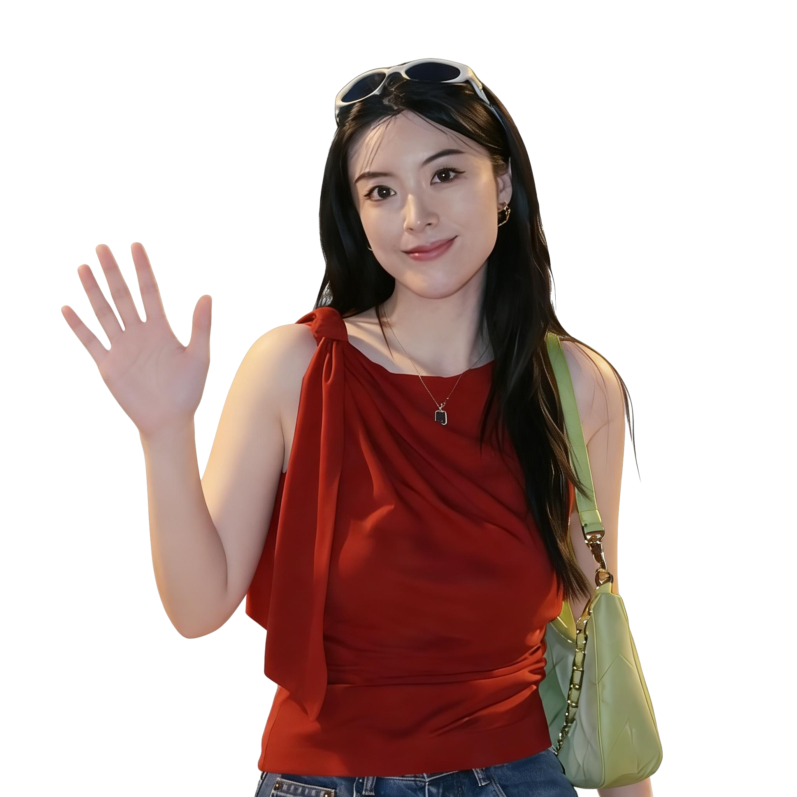

Hi, I'm Yichao.
I study everyday life
with media technologies
and digital governance.
Digital Governance · Human–AI Interaction Click to learn more →
01
About Me
I study how people experience and make sense of digital systems and forms of governance in everyday life, from location-aware mobile platforms to emerging AI technologies.
My doctoral research examined how location-aware smartphones reshape spatial practice and civic identity in Chinese residential communities.
My current work extends into human–AI interaction, focusing on how individuals interpret, trust, and respond to AI-generated content and algorithmic decision-making in everyday platform environments. Across my research, I am interested in how digital systems are not only used, but understood, negotiated, and made meaningful in practice.
I also teach on the MA Digital Media programme at UCL, with a particular focus on research methods and supporting students in developing their own research projects. I am especially interested in making complex theoretical and methodological concepts clear, structured, and applicable to students' own work.
02
Teaching
Core Module · MA Digital Media: Education · UCL
Digital Media Inquiry
Research Design & Ethics
I scripted and generated this video to visualise the full arc of Digital Media and Inquiry, from research ethics and question formation to methodological decision-making. It was a way of reflecting on the module I taught.
Core Module · MA Digital Media: Education · UCL
Internet Cultures
Platforms, Identity & Web-Based Practice
I generated the video below, drawing on the module's reading list and seminar content. It is not a recording of my teaching, but a purpose-made overview of the theoretical arc of the course, covering key themes from identity and self-presentation to platform culture and algorithmic mediation.
MA Digital Media: Education · UCL
Dissertation & Report Workshop
Research Writing & Supervision
I generated the video below, drawing on the workshop content I delivered. This course supported MA students through the writing and research process for their dissertations and research reports, covering research framing, literature review construction, methodology choice, and analytical writing.
Core Module · MA Digital Media, Culture and Education · UCL
Digital Games and Play
Game Studies & Play Theory
Introduced students to game studies as an academic discipline, drawing on theories of play, interactivity, and cultural analysis to examine digital games as both texts and social phenomena.
Core Module · MA Digital Media, Culture and Education · UCL
Mobile Media and Place
Location, Mobility & Spatial Practice
Examined how mobile and location-aware technologies reshape our experience of place, movement, and urban life, drawing on media geography, platform studies, and mobile communication research.
What's it like working with me?
I aim to make research clear, useful, and grounded in how people actually experience the world.

Line Manager · UCL
I don't think I've ever had to double-check anything Yichao handed over. Every file was clean, every detail was accounted for. That kind of reliability made the whole team's work easier.
MA Digital Media Student · UCL
Yichao's guidance on identity performance theory was really useful when I was trying to analyse my data. Her explanation of the codebook structure was also very clear and practical.
MA Digital Media Student · UCL
When I started my MA, I was genuinely worried about the assignments. My background is in business, so I had no experience writing long academic essays. Yichao arranged a meeting, walked me through the structure, and showed me examples on Moodle. I felt much more confident after that.
Research Collaborator
Yichao has this instinct for picking up new tools before most people have heard of them. When the rest of us were still figuring out how AI fit into qualitative research, she'd already started experimenting and was bringing the rest of us along.
MA Digital Media Student · UCL
English is my second language and there were methodology terms I couldn't follow. I dropped Yichao an email and she walked through the logic step by step until it clicked. She never made you feel like your question was a bad one.
Research Collaborator
What stood out was that she kept asking what the data actually meant. She'd push back on surface-level interpretations and bring the group back to the bigger question. That kind of thinking is hard to teach, and it made our work sharper.
04
Research
My research explores how people use and experience mobile and digital media in everyday life, drawing out questions of digital governance, identity, and trust as they emerge from the ground up. It has moved from location-based technologies and surveillance during China's pandemic response to how individuals interpret and negotiate AI-generated content and algorithmic decision-making in contemporary platform environments.
Current Projects
Ongoing · UCL
Human–AI Interaction in Everyday Contexts
A project investigating how individuals interpret and respond to AI-generated content in everyday platform environments, with a focus on trust, compliance, and perceived legitimacy, employing diary-based methods.
Ongoing · UCL
Algorithmic Decision-Making & User Trust
Drawing on ethnographic fieldwork conducted during China's pandemic response, this project examines how individuals navigated the opacity of health and mobility tracking systems, and how uncertainty about algorithmic logic shaped compliance, resistance, and everyday movement. Data collection is complete and the project is currently being developed for publication.
Previous Projects
PhD Research · UCL · 2019–2025
(IM)Mobile Connectivity
Investigated how residents in Chinese residential communities use location-aware smartphones to interact with their environment, negotiate civic identity, and navigate state governance. Employed an ethnographic approach across two years of fieldwork during the pandemic, examining location-based services in everyday life and state health crisis management.
Consulting · KPMG Advisory China · Aug–Oct 2021
Smart City & Digital Transformation
Part of a consulting team on a government-funded £4.3m digital transformation project. Conducted focus groups to assess user engagement with urban digital infrastructure, identified pain points, and contributed to developing strategies to improve smart city service delivery. Also contributed to a smart tourism platform project, covering user needs assessment, digital integration design, and planning activities.
Conference Presentations
University College London · London, UK (In-person)
Doctoral Association · London, UK (Online) · Invited Talk
A talk exploring how large language models can support qualitative researchers at each stage of fieldwork, covering literature synthesis, interview coding, and thematic analysis.
Zhuhai Municipal Government & Provincial Stakeholders · Zhuhai, China (In-person)
An invited presentation to municipal and provincial government stakeholders, sharing research insights on how residents experience algorithmically managed public services and smart-city platforms in their daily lives.
International Communication Association Annual Conference · Toronto, Canada (In-person)
A poster presenting qualitative findings from in-depth interviews and self-reported diaries, examining how residents in Chinese residential communities navigate location-tracking practices, socio-spatial interaction, and surveillance.
IOE Summer Conference · University College London (Online)
Presented during the COVID-19 pandemic via online conference. The paper introduced a self-reported diary methodology to study how residents experienced health-code and location-profiling systems during lockdown in China.
Working Papers
Zhao, Y. From Self-Presentation to State-Mandated Identity Performance: Datafied Citizenship and Digital Nationalism in China's Contact Tracing Platforms.
Working paper
Zhao, Y. Locational Media as Civic Participation: Digital Regulation, Community Engagement, and Place-Making in Chinese Residential Communities.
Working paper
05
Get in Touch
I'd love to hear from you, whether it's about research, teaching, or collaboration.